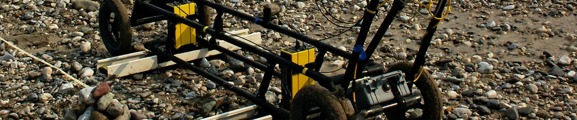
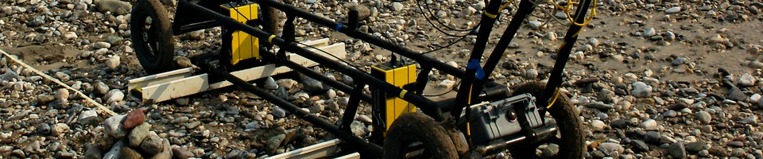
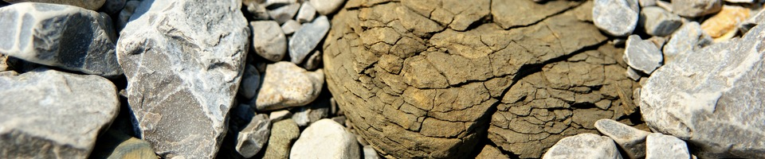
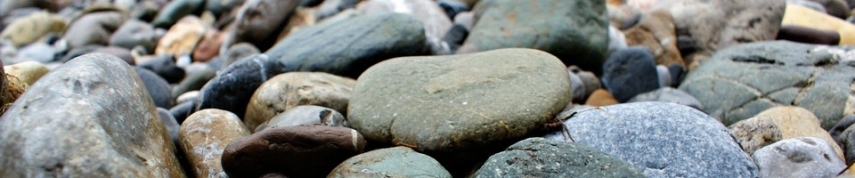
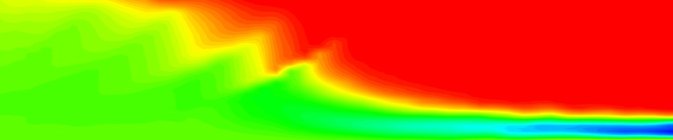
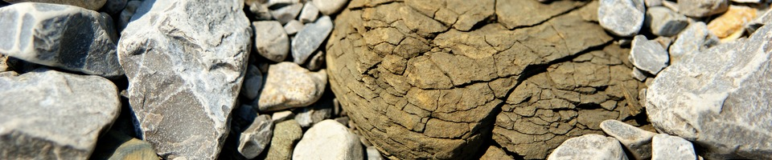
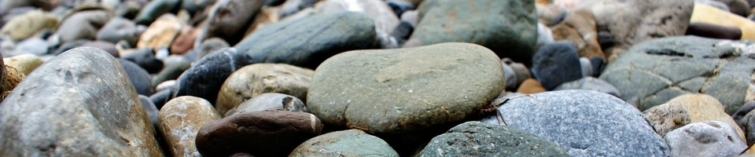
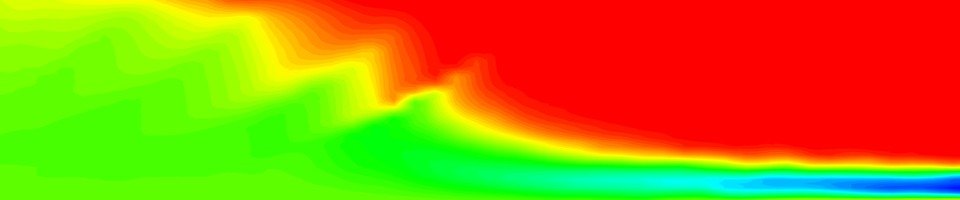
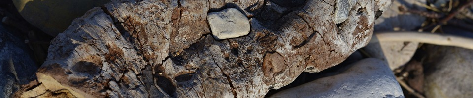
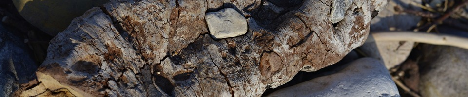

 






 

Research interests
I am driven in my research by my desire to solve challenging problems of societal relevance. I especially appreciate working on the field and on real-world case studies because ‘successful researchers engage in a cycle of theorizing and experimentation so that the results of one experiment become the basis for the hypothesis tested in the next’ (Good and Hardin, 2012). The unifying theme of my research has been groundwater, a vulnerable but resilient natural water and energy resource.
The major objective of groundwater investigation is to answer specific questions possibly in a decision making context to perennially protect and manage groundwater resources (water, heat, subsurface, ...). The finite discrete nature of the numerical models, the unknown geology and hydraulic boundary conditions, the paucity of information on the subsurface (e.g., hydraulic and geophysical measurements) and the lack imagination to develop geologically realistic subsurface heterogeneity models lead inevitably to inadequate representations of the real physical states and processes, and therefore, to forecast uncertainty. Therefore, the uncertainty of any groundwater flow forecast should be quantified. This requires among others:
- Uncertainty modelling of
- subsurface heterogeneity
- subsurface fluxes (at the model interface, e.g., boundary conditions)
- forecast/prediction
- Approaches to combine information from multiple sources with different support scale (e.g., geophysical data and hydraulic head data).
- Uncertainty visualisation
When facing a problem, the art is to choose or develop the most adapted methods to solve the problem (instead of being dependent of a particular method). Indeed, "the relationship between a problem and a method should be discussed from the perspective of a problem, and not the method. Doing otherwise actually causes more harm than good in the long run, because like all 'hand outs', it leaves the students incapable of fending (i.e., thinking) for themselves" (Michalewicz and Fogel, 2004).
Some of the "tools" I use in a hypothesis-testing framework:
- Conceptual thinking
- Field measurements and observations
- Numerical modelling
- Data analysis: multivariate analysis, dimensionality reduction, clustering/classification, data associations
- Statistics: Bayesian/inductive statistics, Gaussian process, statistical learning, Markov chain Monte Carlo.
- Sensitivity analysis